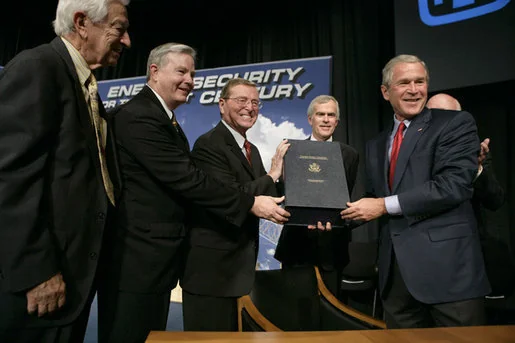
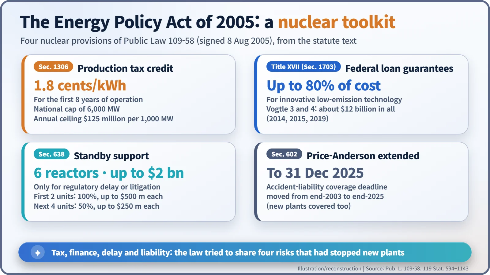
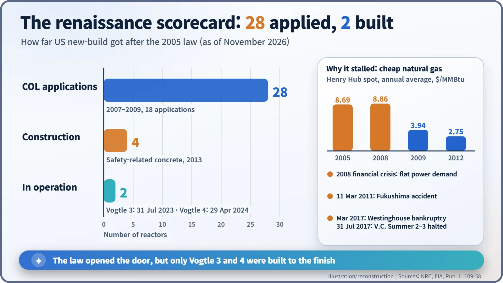

Nuclear History · 277
The Law That Moved the Clocks Also Restarted the Reactor Clock — The Energy Policy Act of 2005 and the "Nuclear Renaissance"
Signed on 8 August 2005, a sprawling energy law offered four ways to share the risk of building the first new US reactors in decades; the applications poured in, but cheap gas, flat demand and Fukushima left only Vogtle 3 and 4 standing.
Signed on 8 August 2005 at Sandia National Laboratories, the Energy Policy Act of 2005 offered four tools to make the first new US reactors in decades less risky: a production tax credit, federal loan guarantees, "standby support" against regulatory and legal delays, and an extension of Price-Anderson liability coverage. Between 2007 and 2009 the NRC received 18 licence applications for 28 reactors, the heart of the so-called nuclear renaissance. Cheap shale gas, flat demand and Fukushima intervened: four units were started and two, Vogtle 3 and 4, were finished.
The law that moved the clocks
At 2 a.m. on Sunday, 11 March 2007, clocks across most of the United States sprang forward an hour. Nothing unusual about that, except the date: daylight saving time had arrived three weeks early. A law had moved its start from the first Sunday in April to the second Sunday in March. That law was the Energy Policy Act of 2005. [1]
The same law also tried to restart a clock that had been stopped for almost three decades: the clock of new nuclear construction in America.
A 550-page law and a signing in the desert
On 8 August 2005, at Sandia National Laboratories in Albuquerque, New Mexico, President George W. Bush (1946–) signed the bill. It became Public Law 109-58 and fills roughly 550 pages of the US Statutes at Large (119 Stat. 594–1143). [1]

In his remarks, Bush put the problem bluntly: "Yet America has not ordered a nuclear plant since the 1970s." Then came the promise: "We will start building nuclear power plants again by the end of this decade." [2]
To be fair, nuclear power was not the star of the whole act. It was an omnibus bill covering oil, gas, coal, biofuel blending mandates, energy efficiency and, yes, daylight saving time. Nuclear occupied a few of its titles. But to the industry, those few titles sounded like a starting gun.
Why 2005?
Several pressures had lined up. On 14 August 2003 a blackout swept across the US Northeast and Midwest and Ontario, exposing how fragile the grid could be. Natural gas, the fuel of choice for new power stations, averaged $8.69 per million British thermal units (MMBtu) at Henry Hub in 2005. [5] Concern about climate change was growing. And the existing reactor fleet was running at capacity factors of around 90 percent, which persuaded many that a nuclear plant, once built, was a good earner.
The obstacle was the risk carried by whoever went first. After decades without new construction, nobody could promise the cost, the interest bill, the licensing schedule or the absence of lawsuits. The act answered with four tools for sharing that risk with the government.

Four kinds of insurance written into law
- A production tax credit (Section 1306). A new plant of a recently certified design could take a tax credit of 1.8 cents for every kilowatt-hour it sold during its first eight years of operation. The credit was capped: 6,000 megawatts nationwide, roughly five or six large reactors, and at most $125 million a year per 1,000 megawatts.
- Federal loan guarantees (Title XVII). The government would guarantee loans for innovative technologies that cut greenhouse gas emissions, nuclear included. For a project where interest charges pile up over years of construction, a lower borrowing rate is worth a great deal of money.
- Standby support (Section 638). This was the most unusual tool, and it is what Bush called "a new form of federal risk insurance for the first six builders of new nuclear power plants." If full-power operation were delayed because the regulator missed its own inspection or hearing schedules, or because of litigation, the government would pay the delay costs. For the first two reactors it covered 100 percent, up to $500 million each; for the next four, 50 percent, up to $250 million each — six reactors and at most $2 billion in total. Delays caused by the builder's own failures, or ordinary business risks, were excluded. It was not a promise to pay for every late project.
- Price-Anderson extended (Section 602). The deadline of the US nuclear accident-liability system was moved to 31 December 2025, so that new plants could shelter under the same liability umbrella as the old ones.
Twenty-eight on paper, four in concrete
The response was enthusiastic. Starting in September 2007 and continuing through 2009, the Nuclear Regulatory Commission (NRC) received 18 applications for combined construction and operating licences (COLs), covering 28 reactors. Industry and the press called it the "nuclear renaissance." [3] [4]

Then the wind changed. The shale gas boom pushed Henry Hub prices down to $3.94 in 2009 and $2.75 in 2012. [5] After the 2008 financial crisis, electricity demand stopped growing. In March 2011 the Fukushima accident made investors more cautious still. Many applications were suspended or withdrawn.
Only four reactors went all the way to construction: Vogtle 3 and 4 in Georgia and V.C. Summer 2 and 3 in South Carolina. Both pairs received their licences in 2012, and safety-related concrete began to flow in March 2013. After their main contractor, Westinghouse, filed for bankruptcy protection in March 2017, the Summer units were abandoned on 31 July 2017. Vogtle 3 entered commercial operation on 31 July 2023 and Vogtle 4 on 29 April 2024 — about seven years later than first planned.
Costs swelled too. The two Vogtle units, once expected to cost about $14 billion, are now estimated at $34 billion to $37 billion depending on what is counted. Federal loan guarantees for the project totalled about $12 billion. [6]
What the starting gun left behind
In the United States, the renaissance never bloomed the way its announcements suggested. Yet the law was not simply wasted. The new licensing route — pre-certified designs plus a single combined licence — was used in earnest for the first time, and a nuclear supply chain and skilled workforce were rebuilt after decades of idleness. As of November 2026, even the abandoned Summer units are being studied for completion by a new developer, although no decision to restart construction has been made.
A law can open the door. Walking through it and actually building a plant takes something else: control of cost and schedule. That was the expensive lesson of the 2005 starting gun.